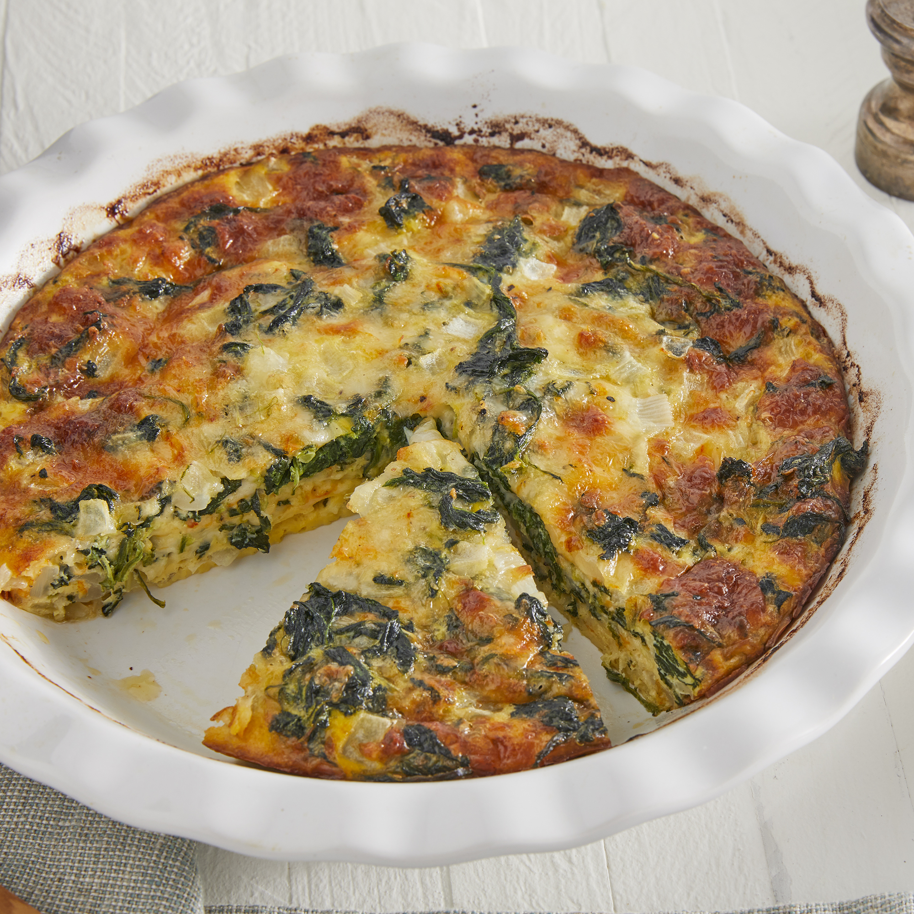

Crustless Spinach Quiche

Description
This crustless quiche made with eggs, spinach, and Muenster cheese is perfect to serve at any meal. With no heavy crust to make, this light-tasting quiche is ready in under an hour. Make it your own by adding leftover ham and substituting Cheddar, feta, or goat cheese for the Muenster. I serve this quick and easy quiche in the summer for brunch with a side of sausage links and a fresh fruit bowl!
Ingredients
- Eggs
- Spinach
- Onion
- Muenster cheese
- Salt and Pepper
Steps
- Cook the Onions and Spinach: Sautee the onions until soft, then add the spinach and cook until wilted.
- Make the Quiche Mixture: Whisk eggs, salt, and pepper ina bowl until combined. Add the cheese and spinanch mixture to the eggs.
- Bake: Whisk eggs, salt, and pepper in a bowl until combined. Add the cheese and spinach mixture to the eggs.